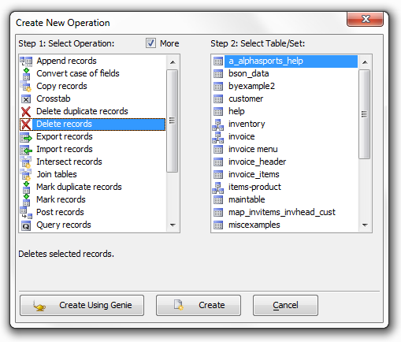
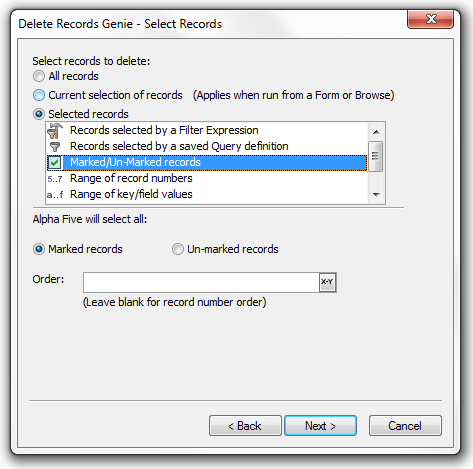
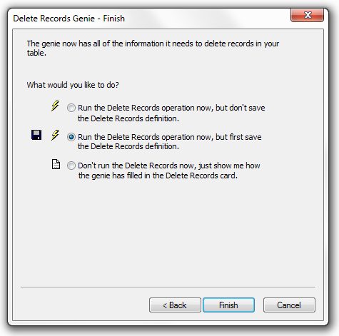
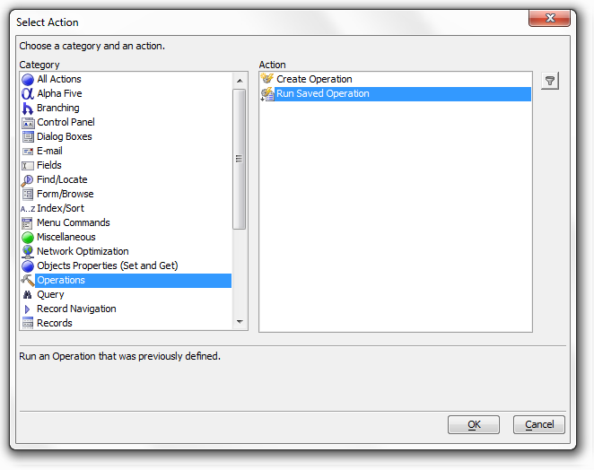
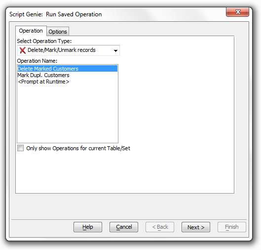
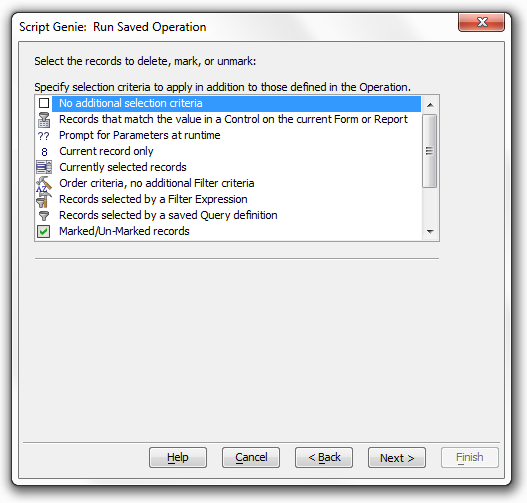
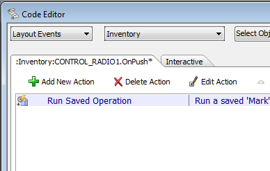

Delete Marked Customers
Operations perform maintenance and management functions on your database. You can define and run an operation immediately, or you can define and save an operation to be run as Needed. When run, the Delete Marked Customers operation removes all marked customer records from the AlphaSports database. Follow these steps to create a comparable operation.
Procedure: Create and Save a Delete Marked Records Operation
Open the Control Panel and click the Operations tab.
Click New to display the Create New Operation dialog box.
Select "Delete records" from the Select Operation list.
Select "customer" from the Select Table/Set list.
Click Create Using Genie.

Click Selected Records under Select records to delete.
Select "Marked/Un-Marked records" from the list.
Click Next >.

Since the point of the design effort is to create a re-usable operation, select the second option button: Run the Delete Records operation now, but first save the Delete Records definition.
Click Finish.

Procedure: Run an Operation from a Button
This procedure uses Action Scripting to delete all marked records from the Customer table.
Sketch a button on the form.
Enter the button's name in the Label field.
Click the Use Action Scripting option button.
Click Launch Script Editor.
Click Add New Action.
Select "Operations" in the Category list.
Select "Run Saved Operation" in the Action list and click OK.

Select "Delete/Mark/Unmark records" in the Select Operation Type list.
Select "Delete Marked Customers" ( to see how it was created ) in the Operation Name list.
Click Next >.

Click Next > and Finish.

Click and Save All.

See Also